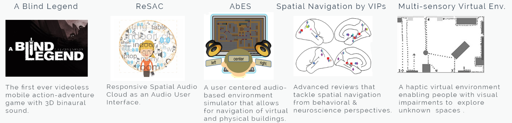

Spatial Audio can be defined as a 3D audio experience created using headphones. Since people with visual impairments have a heightened auditory sense when compared to the general sighted population, spatial audio technology is a useful tool for improving accessibility.
This project is a subproject of AVARE (Augmented Virtual And Real Environments) which has the goal of empowering VIPs (Visually Impaired Persons) to experience rich multi-modal interactions in everyday activities ranging from work and social interactions to entertainment and exploration, while remaining affordable in emerging markets.
ReSAC (Responsive Spatial Audio Cloud) is a technology for intuitively describing the world in audio form to a VIP. ReSAC aids in a user’s iterative exploration of new environments by verbalizing details (objects, people, aesthetics) as a spatialized “cloud” of words and sounds.
At Microsoft Research, my team and I are developing software to test ReSAC in virtual and mixed reality environments. We are also conducting user studies with blind and blind-folded participants to test the effectiveness of ReSAC. The process comprises of literature review, user studies, need-finding, and removing barriers to gaming experiences of the vision-impaired.
I am involved in developing the software and conducting user studies on an iterative basis.
Details of this project have not been revealed due to a Non-Disclosure-Agreement.
Supervisor: Dr Manohar Swaminathan at Microsoft Research, India
Period: January 2018 - Present
Skills used: Unity Game Engine, HoloLens, User Experiment Design
PROCESS
COMPETITIVE ANALYSIS
I looked into the related works in the area of Accessibility for people with vision impairments. I analyzed each of these works to design and conduct efficient user studies. Selected pieces of literature review are mentioned below.
APPLICATIONS
The estimated number of people with vision impairments in the world is 285 million. Use of ReSAC would enable these individuals to navigate in open physical, virtual and mixed-reality environments without any supervision or external help. Additionally, ReSAC can help VIPs to learn new environments better and faster by forming better cognitive maps.